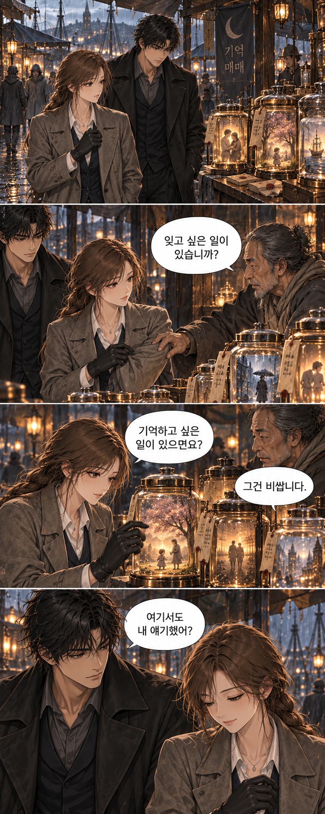
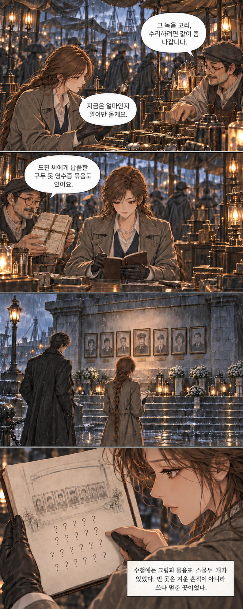
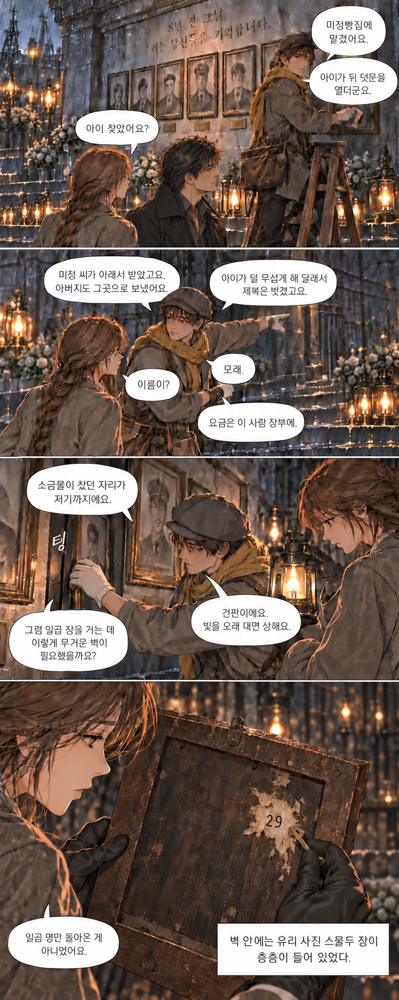
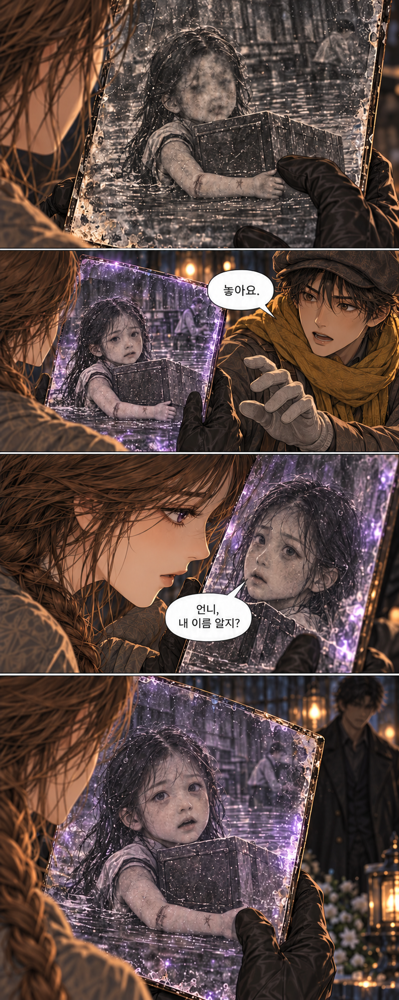

기억을 잃은 여자와 그녀를 기다린 남자.
열한 달 만에, 회항서점의 문이 열린다.
돌아온 사람들의 밤 · 웹툰
제5화. 일곱 장 뒤의 사람들

그림 크게 보기 · 1/4

그림 크게 보기 · 2/4

그림 크게 보기 · 3/4

그림 크게 보기 · 4/4기억을 잃은 여자와 그녀를 기다린 남자.
열한 달 만에, 회항서점의 문이 열린다.
돌아온 사람들의 밤 · 웹툰

그림 크게 보기 · 1/4
그림 크게 보기 · 2/4
그림 크게 보기 · 3/4
그림 크게 보기 · 4/4